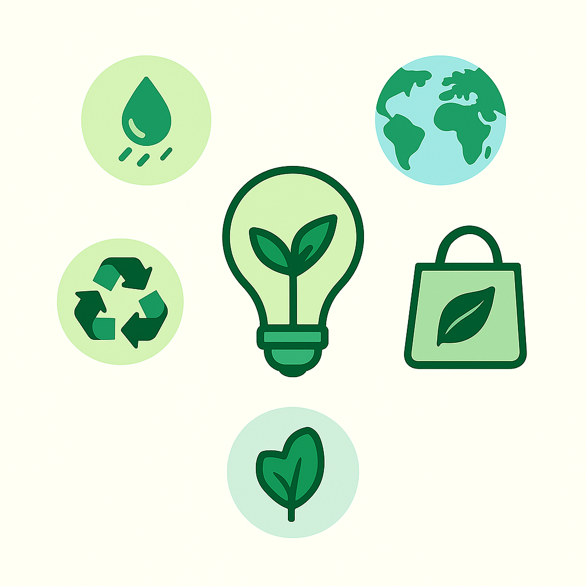

Eco tips for everyday life
Small changes in your home, transport and consumption habits can make a big difference. Use these ideas to support your daily actions.

Practical ideas you can start today
💡 Energy at home
- Turn off lights when leaving a room.
- Unplug chargers and devices not in use.
- Prefer LED bulbs and natural light during the day.
🚿 Water use
- Take shorter showers and close the tap while brushing your teeth.
- Fix leaks as soon as you notice them.
- Use a bucket instead of a hose when washing outside areas.
🚶 Transport & movement
- Walk or cycle for short distances whenever possible.
- Use public transport or car sharing to reduce emissions.
- Combine tasks in one trip instead of multiple small trips.
♻️ Waste & consumption
- Carry a reusable bottle, bag and coffee cup.
- Sort waste correctly for recycling.
- Choose products with less packaging and buy only what you need.